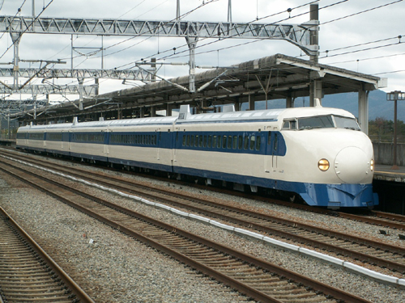

|
1964. október 18-án, a tokiói olimpiai játékok elõtt Japán megnyitotta a Tokió – Oszaka közötti 515 km hosszú, normál nyomtávolságú, nagysebességû Tókaidó Sinkanszen vonalát, ami elindította a nagysebességû közlekedés világméretû fellendülését, valamint új lendületet adott a vasúti iparnak. A Tokió – Oszaka vasút akkor 1 milliárd dollárba került. Negyvenöt év alatt a sebesség a kezdeti 200 km/h-ról több mint 300 km/h-ra növekedett, és a Sinkanszen hálózata meghaladta a 2500 km-t. A Sinkanszen építéseA Második világháborúból feléledõ Japán gazdasága gyors fejlõdésnek indult. A Tókaidó korridor mellett él Japán lakosságának 40%-a, az ipari termelés 70%-át e térségben állítják elõ, és a nemzeti jövedelmük 60%-át is itt termelik meg. A közlekedési kapacitáshiány megszüntetésére három lehetõség volt: |
 |